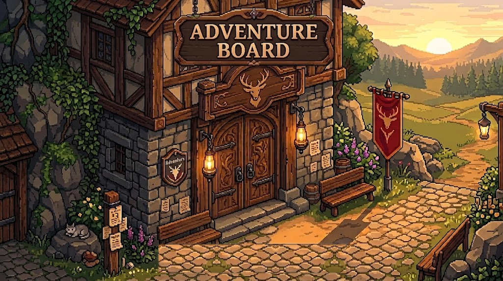
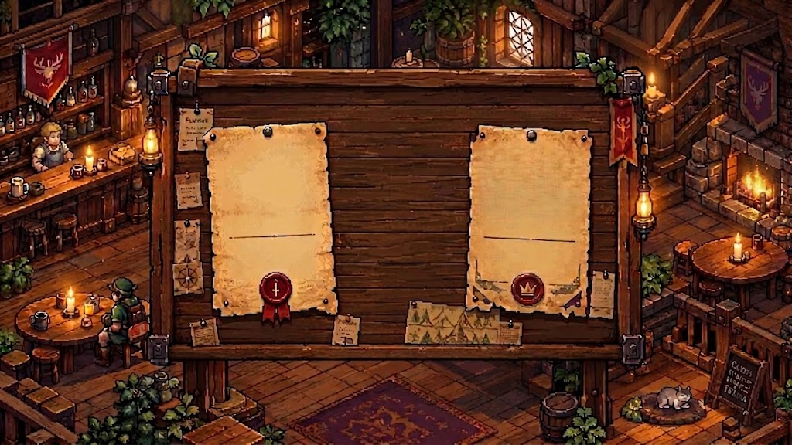
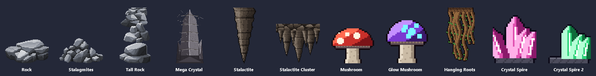

<title>เธ„เธนเนˆเธกเธทเธญเธฃเธฒเธขเธ‡เธฒเธ™ Exergame</title>
<meta name="claude:viewport-fit-sides" content="cover">
<link rel="stylesheet" href="https://fonts.googleapis.com/css2?family=IBM+Plex+Sans+Thai:wght@400;600;700&family=IBM+Plex+Mono:wght@400;600&display=swap">
<style>
/* layout: เน€เธญเธเธชเธฒเธฃเธ„เธญเธฅเธฑเธกเธ™เนŒเน€เธ”เธตเธขเธงเธญเนˆเธฒเธ™เธ‡เนˆเธฒเธข เธเธงเน‰เธฒเธ‡เน„เธกเนˆเน€เธเธดเธ™ 860px เน‚เธ—เธ™เน„เธกเน‰/เธ—เธญเธ‡เนเธ”เธ‡เธ•เธฒเธกเธ˜เธตเธกเธเธดเธฅเธ”เนŒเธ‚เธญเธ‡เน€เธเธก */
:root {
  --bg: #fbf8f4; --surface: #ffffff; --fg: #23201c; --muted: #6c645b; --line: #e3dbd0;
  --accent: #a4561c; --accent-soft: #f4e7d9; --head: #ece5dc; --info: #f3f0ea;
  --note-bg: #fff4dc; --note-line: #e9cf8f;
  --code-bg: #1e2230; --code-fg: #e7eaf3; --code-cmt: #8fd3a0; --code-star: #ffd479;
  --font-body: "IBM Plex Sans Thai", "Leelawadee UI", Tahoma, sans-serif;
  --font-mono: "IBM Plex Mono", Consolas, "IBM Plex Sans Thai", monospace;
}
@media (prefers-color-scheme: dark) { :root:not([data-theme="light"]) {
  --bg: #17150f; --surface: #201d17; --fg: #ece6dc; --muted: #a79e91; --line: #3a342b;
  --accent: #e39a5c; --accent-soft: #33261a; --head: #2a251e; --info: #241f19;
  --note-bg: #332a17; --note-line: #6b5627;
  --code-bg: #10131b; --code-fg: #e7eaf3; --code-cmt: #8fd3a0; --code-star: #ffd479; color-scheme: dark } }
:root[data-theme="dark"] {
  --bg: #17150f; --surface: #201d17; --fg: #ece6dc; --muted: #a79e91; --line: #3a342b;
  --accent: #e39a5c; --accent-soft: #33261a; --head: #2a251e; --info: #241f19;
  --note-bg: #332a17; --note-line: #6b5627;
  --code-bg: #10131b; --code-fg: #e7eaf3; --code-cmt: #8fd3a0; --code-star: #ffd479; color-scheme: dark }
body { background: var(--bg); color: var(--fg); font-family: var(--font-body); font-size: 16px; line-height: 1.7;
  padding-left: max(16px, env(safe-area-inset-left, 0px)); padding-right: max(16px, env(safe-area-inset-right, 0px)); padding-block: 28px 56px; }
.page { max-width: 860px; margin: 0 auto; display: flex; flex-direction: column; gap: 10px; }
.page > * { min-width: 0; }
h1 { font-size: clamp(1.6rem, 4vw, 2.2rem); line-height: 1.3; margin: 0; color: var(--accent); text-wrap: balance; }
h2 { font-size: 1.3rem; margin: 26px 0 2px; padding-bottom: 6px; border-bottom: 2px solid var(--accent); text-wrap: balance; }
h3 { font-size: 1.08rem; margin: 18px 0 0; text-wrap: balance; }
p, ul { margin: 0; }
ul { padding-left: 22px; display: flex; flex-direction: column; gap: 4px; }
.sub { color: var(--muted); }
code { font-family: var(--font-mono); font-size: 0.86em; background: var(--info); border: 1px solid var(--line); padding: 0 4px; border-radius: 4px; overflow-wrap: anywhere; }
.scroll { overflow-x: auto; }
table { border-collapse: collapse; width: 100%; font-size: 0.92rem; background: var(--surface); }
th, td { border: 1px solid var(--line); padding: 6px 9px; text-align: left; vertical-align: top; }
th { background: var(--head); font-weight: 600; }
td:first-child { font-variant-numeric: tabular-nums; white-space: nowrap; }
.code { background: var(--code-bg); border-radius: 8px; }
pre { margin: 0; padding: 12px 14px; font-family: var(--font-mono); font-size: 0.82rem; line-height: 1.55; color: var(--code-fg); white-space: pre; }
pre .c { color: var(--code-cmt); }
pre .s { color: var(--code-star); font-weight: 600; }
.use { background: var(--info); border-left: 3px solid var(--accent); padding: 8px 12px; border-radius: 0 6px 6px 0; }
.note { background: var(--note-bg); border: 1px solid var(--note-line); padding: 8px 12px; border-radius: 6px; }
figure { margin: 0; display: flex; flex-direction: column; gap: 4px; }
figure img { max-width: 100%; height: auto; border-radius: 6px; border: 1px solid var(--line); display: block; }
figcaption { font-size: 0.85rem; color: var(--muted); text-align: center; }
.two { display: grid; grid-template-columns: repeat(auto-fit, minmax(260px, 1fr)); gap: 12px; }
.keep { display: flex; flex-direction: column; gap: 10px; }
a:focus-visible, .scroll:focus-visible { outline: 2px solid var(--accent); outline-offset: 2px; }
</style>
<main class="page">

<h1>คู่มือเลือกภาพและโค้ดสำหรับรายงาน / สไลด์</h1>
<p class="sub">เกมออกกำลังกายด้วยแผ่นเหยียบ 4 ทิศ (Exergame) — Unity 2022.3<br>
3 โหมดเกม: <b>ถ้ำกู้ระเบิด</b> (Tutorialmine, Cave1–3) · <b>วิ่งไม่รู้จบ</b> (CookieRunner) · <b>จำลูกศร</b> (Arrow Memory)</p>

<div class="two">
  <figure><figcaption>ภาพที่ 1 พื้นหลังหน้าเมนูหลัก</figcaption></figure>
  <figure><figcaption>ภาพที่ 2 พื้นหลังหน้าเลือกเกม (Quest Board)</figcaption></figure>
</div>
<div class="note">ภาพที่ 1–2 เป็นภาพพื้นหลังเปล่า ยังไม่มีปุ่มหรือกระดาษเควส ถ้าจะใช้เป็นภาพหน้าจอเกมให้แคปจากตอนเล่นจริง (หัวข้อ 2)</div>

<h2>1. โครงเรื่องสไลด์ที่แนะนำ (15 หน้า)</h2>
<div class="scroll"><table>
<tr><th>หน้า</th><th>หัวข้อ</th><th>ภาพ</th><th>โค้ด</th></tr>
<tr><td>1</td><td>ชื่อโปรเจกต์</td><td>ภาพที่ 1</td><td>-</td></tr>
<tr><td>2</td><td>ที่มาและปัญหา (ออกกำลังกายไม่สนุก / ไม่ต่อเนื่อง)</td><td>-</td><td>-</td></tr>
<tr><td>3</td><td>วัตถุประสงค์ + กลุ่มเป้าหมาย</td><td>-</td><td>-</td></tr>
<tr><td>4</td><td>อุปกรณ์: แผ่นเหยียบ 4 ทิศ (รูปถ่ายแผ่นจริง + ผังปุ่ม)</td><td>รูปถ่ายแผ่นเหยียบ</td><td>3.1</td></tr>
<tr><td>5</td><td>ภาพรวมระบบ / ผังการไหลของหน้าจอ</td><td>ผังหัวข้อ 4</td><td>-</td></tr>
<tr><td>6</td><td>หน้าเมนูหลัก + หน้าเลือกเกม</td><td>ภาพที่ 1, 2 + แคป A, C</td><td>-</td></tr>
<tr><td>7</td><td>โหมดถ้ำกู้ระเบิด: วิธีเล่น</td><td>แคป D, E</td><td>3.2</td></tr>
<tr><td>8</td><td>โหมดถ้ำ: มอนสเตอร์ + ระเบิด (Cave3)</td><td>แคป F</td><td>-</td></tr>
<tr><td>9</td><td>โหมดวิ่ง: วิธีเล่น + ไอเทม</td><td>แคป H–K + ภาพที่ 4</td><td>3.3</td></tr>
<tr><td>10</td><td>โหมดวิ่ง: 8 โซนตามระยะทาง + ฉากสุ่มสร้าง</td><td>ภาพที่ 3 + แคป L</td><td>3.4</td></tr>
<tr><td>11</td><td>โหมดจำลูกศร</td><td>แคป N, O</td><td>3.5</td></tr>
<tr><td>12</td><td>การคำนวณแคลอรี่ (สูตร METs) + หน้าสรุปผล</td><td>แคป G, M, P</td><td>3.6</td></tr>
<tr><td>13</td><td>การออกแบบให้เหมาะกับแผ่นเหยียบ (ไม่มีราวจับ)</td><td>แคป Q</td><td>หัวข้อ 5</td></tr>
<tr><td>14</td><td>ผลการทดสอบ / ข้อเสนอแนะ</td><td>ตาราง / กราฟ</td><td>-</td></tr>
<tr><td>15</td><td>สรุป</td><td>-</td><td>-</td></tr>
</table></div>
<div class="note">สไลด์ใส่โค้ดแค่ 5–15 บรรทัดต่อหน้า (เฉพาะบรรทัดที่มี ★) ส่วนรายงานใส่โค้ดเต็มตามหัวข้อ 3 ได้</div>

<h2>2. ภาพที่ต้องแคปเองจาก Unity (Play Mode)</h2>
<p>วิธีแคป: ตั้งหน้าต่าง Game เป็น 1920x1080 กด Play แล้วกด <code>Win + Shift + S</code></p>
<div class="scroll"><table>
<tr><th>#</th><th>ฉาก</th><th>จังหวะที่ควรแคป</th></tr>
<tr><td>A</td><td>Mainmenu</td><td>หน้าแรก มีแถบปุ่มด้านล่าง และเอฟเฟกต์ไฟตะเกียง / หิ่งห้อย</td></tr>
<tr><td>B</td><td>Mainmenu</td><td>หน้า Option (ตั้งเสียง / เปลี่ยนปุ่ม)</td></tr>
<tr><td>C</td><td>QuestBoard</td><td>หน้าเลือกเกม ตอนเลือกการ์ดเกมใดเกมหนึ่ง (เห็นกรอบเรืองแสง)</td></tr>
<tr><td>D</td><td>Tutorialmine</td><td>ตอนมีคำแนะนำสอนเล่นขึ้นบนจอ</td></tr>
<tr><td>E</td><td>Cave1 / Cave2</td><td>ตอนเปิดช่อง เห็นตัวเลขบอกจำนวนระเบิดรอบๆ และธงที่ปักไว้</td></tr>
<tr><td>F</td><td>Cave3</td><td>ตอนมีมอนสเตอร์เดินเข้าหา + หลอดเลือดมอนสเตอร์</td></tr>
<tr><td>G</td><td>Cave</td><td>หน้า Stage Clear และหน้า Game Over (มีแถบสถิติการเคลื่อนไหว)</td></tr>
<tr><td>H</td><td>CookieRunner</td><td>ตอนวิ่งปกติ เห็นหัวใจ 3 ดวง เหรียญ ระยะทาง</td></tr>
<tr><td>I</td><td>CookieRunner</td><td>ตอนกระโดดข้ามหลุม (มีเหรียญโค้งข้ามหลุม)</td></tr>
<tr><td>J</td><td>CookieRunner</td><td>ตอนสไลด์ลอดหินย้อย</td></tr>
<tr><td>K</td><td>CookieRunner</td><td>ตอนติดบัฟ Blast / Giant ชนสิ่งกีดขวางแตกกระจาย</td></tr>
<tr><td>L</td><td>CookieRunner</td><td>ตอนวิ่งผ่านประตูเปลี่ยนโซน (ป้ายชื่อโซนขึ้น)</td></tr>
<tr><td>M</td><td>CookieRunner</td><td>หน้าสรุปผล (กระโดด / สไลด์ / สิ่งกีดขวาง / แคลอรี่)</td></tr>
<tr><td>N</td><td>ArrowMemory</td><td>หน้าเลือกระดับความยาก</td></tr>
<tr><td>O</td><td>ArrowMemory</td><td>ตอนนับถอยหลัง 3-2-1 และตอนแสดงลูกศร</td></tr>
<tr><td>P</td><td>ArrowMemory</td><td>หน้าสรุปผล</td></tr>
<tr><td>Q</td><td>(รูปถ่าย)</td><td>ผู้เล่นเหยียบแผ่นจริงขณะเล่น</td></tr>
</table></div>
<div class="note">เคล็ดลับ: ถ้าจะแคปโซนท้ายๆ ของโหมดวิ่งให้เร็วขึ้น ลดระยะในตาราง <code>difficultyLevels</code> ใน <code>CookieGameManager.cs</code> ชั่วคราว แล้วแก้กลับหลังแคปเสร็จ</div>

<figure><figcaption>ภาพที่ 3 โซนทั้ง 8 ของโหมดวิ่ง เปลี่ยนตามระยะทาง</figcaption></figure>
<figure><figcaption>ภาพที่ 4 สิ่งกีดขวางทั้ง 11 แบบของโหมดวิ่ง</figcaption></figure>

<h2>3. โค้ดที่ควรใส่</h2>

<h3>3.1 ระบบรับปุ่มจากแผ่นเหยียบ — <code>Assets/Code/GameInputBindings.cs</code></h3>
<div class="use"><b>ใช้อธิบาย:</b> แผ่นเหยียบต่อกับคอมเป็นจอยสติ๊ก แต่ละทิศคือปุ่มจอยหนึ่งปุ่ม รองรับคีย์บอร์ดสำรองด้วย และเปลี่ยนปุ่มได้จากหน้า Option</div>
<div class="scroll code"><pre><span class="s">// ★ ทิศของแผ่นเหยียบ 4 ทิศ</span>
public const KeyCode PadUp    = KeyCode.Joystick1Button5;
public const KeyCode PadDown  = KeyCode.Joystick1Button11;
public const KeyCode PadLeft  = KeyCode.Joystick1Button8;
public const KeyCode PadRight = KeyCode.Joystick1Button3;

<span class="c">// แต่ละการกระทำ = ปุ่มแผ่นเหยียบ + ปุ่มคีย์บอร์ด + ปุ่มลูกศรสำรอง</span>
{ GameAction.RunJump,  new Defaults(PadUp,   KeyCode.Space, KeyCode.UpArrow) },
{ GameAction.RunSlide, new Defaults(PadDown, KeyCode.S,     KeyCode.DownArrow) },
{ GameAction.MoveLeft, new Defaults(PadLeft, KeyCode.A,     KeyCode.LeftArrow) },

<span class="s">// ★ กดปุ่มไหนก็ได้ในชุดนี้ = ทำการกระทำนั้น</span>
public static bool GetDown(GameAction action)
{
    EnsureLoaded();
    return Input.GetKeyDown(padBinding[action])
        || Input.GetKeyDown(keyBinding[action])
        || Input.GetKeyDown(defaults[action].fallback);
}</pre></div>

<h3>3.2 โหมดถ้ำ: นับระเบิดรอบช่อง + เปิดช่องว่างต่อเนื่อง — <code>Assets/Code/PlayerController.cs</code></h3>
<div class="use"><b>ใช้อธิบาย:</b> หลักการแบบ Minesweeper ช่องที่เปิดแสดงจำนวนระเบิด/มอนสเตอร์ใน 8 ช่องรอบๆ ถ้าเป็น 0 จะเปิดช่องข้างเคียงต่อเองด้วย BFS (Queue)</div>
<div class="scroll code"><pre><span class="s">// ★ นับกับดักใน 8 ช่องรอบตัว</span>
int CountBombsAround(Vector3Int targetCell)
{
    int count = 0;
    for (int x = -1; x &lt;= 1; x++)
        for (int y = -1; y &lt;= 1; y++)
        {
            if (x == 0 &amp;&amp; y == 0) continue;
            Vector3Int c = new Vector3Int(targetCell.x + x, targetCell.y + y, targetCell.z);
            if (mineCells.Contains(c) || monsterCells.Contains(c)) count++;
        }
    return count;
}

<span class="s">// ★ เปิดช่องต่อเนื่องแบบ BFS เมื่อรอบๆ ไม่มีกับดัก</span>
void RevealCascade(Vector3Int startCell)
{
    Queue&lt;Vector3Int&gt; cellsToProcess = new Queue&lt;Vector3Int&gt;();
    cellsToProcess.Enqueue(startCell);
    while (cellsToProcess.Count &gt; 0)
    {
        Vector3Int currentCell = cellsToProcess.Dequeue();
        if (revealedCells.Contains(currentCell) || IsTileProtected(currentCell)) continue;
        RevealSingleCell(currentCell);
        if (CountBombsAround(currentCell) == 0)
            for (int x = -1; x &lt;= 1; x++)
                for (int y = -1; y &lt;= 1; y++)
                {
                    if (x == 0 &amp;&amp; y == 0) continue;
                    Vector3Int n = new Vector3Int(currentCell.x + x, currentCell.y + y, currentCell.z);
                    if (!revealedCells.Contains(n)) cellsToProcess.Enqueue(n);
                }
    }
}</pre></div>
<p>ส่วนเสริมที่เล่าได้: ปักธงถูกจุดเท่านั้นถึงนับว่าเคลียร์ (<code>ToggleFlagInFront</code>), Cave3 มีมอนสเตอร์เดินตามผู้เล่นบนตาราง (<code>MonsterChaserAI.cs</code>) และระเบิดทำดาเมจมอนสเตอร์ได้</p>

<div class="keep"><h3>3.3 โหมดวิ่ง: กระโดดแบบจำปุ่มล่วงหน้า (Jump Buffer) — <code>CookiePlayerController.cs</code></h3>
<div class="use"><b>ใช้อธิบาย:</b> ผู้เล่นอาจเหยียบแผ่นเร็วกว่าจังหวะลงพื้นเล็กน้อย เกมจะจำการเหยียบไว้ 0.3 วินาที พอเท้าแตะพื้นก็กระโดดให้ทันที ทำให้เล่นด้วยแผ่นเหยียบได้ลื่นไหล</div>
<div class="scroll code"><pre>[SerializeField] private float jumpBufferTime = 0.3f;

private void HandleJumpBuffer()
{
    if (jumpBufferTimer &gt; 0f)
    {
        jumpBufferTimer -= Time.deltaTime;
        <span class="s">// ★ ลงพื้นแล้ว (หรือเพิ่งเดินตกขอบไม่นาน) และยังอยู่ในช่วงจำปุ่ม = กระโดดเลย</span>
        if (isGrounded || coyoteTimer &gt; 0f)
        {
            PerformJump(false);
            jumpBufferTimer = 0f;
        }
    }
}</pre></div></div>

<h3>3.4 โหมดวิ่ง: ความยากตามระยะทาง + ฉากสุ่มสร้าง — <code>CookieGameManager.cs</code>, <code>CookieMapSpawner.cs</code></h3>
<div class="use"><b>ใช้อธิบาย:</b> ยิ่งวิ่งไกล ระดับยิ่งสูง ความเร็วเพิ่มแต่จำกัดไม่เกิน 1.4 เท่า (เพราะแผ่นเหยียบไม่มีราวจับ) และฉากที่มีหลุมโผล่บ่อยขึ้น</div>
<div class="scroll code"><pre><span class="s">// ★ ระดับความยาก 8 ระดับ ตามระยะทาง (เมตร)</span>
new DifficultyLevel { startDistance = 0f,    announcement = "" },
new DifficultyLevel { startDistance = 150f,  announcement = "ROLLING BOULDERS!" },
new DifficultyLevel { startDistance = 300f,  announcement = "FALLING STALACTITES!" },
new DifficultyLevel { startDistance = 450f,  announcement = "SPIKE TRAPS!" },
new DifficultyLevel { startDistance = 650f,  announcement = "MAX SPEED!" },
new DifficultyLevel { startDistance = 850f,  announcement = "GIANT MUSHROOMS!" },
new DifficultyLevel { startDistance = 1050f, announcement = "HANGING ROOTS!" },
new DifficultyLevel { startDistance = 1250f, announcement = "CRYSTAL SPIRES!" },</pre></div>
<div class="scroll code"><pre><span class="s">// ★ สุ่มเลือกฉากแบบถ่วงน้ำหนัก: ระดับสูง ฉากหลุมมีโอกาสมากขึ้น</span>
float pitWeight = 1f + pitWeightPerLevel * (level - 1);
float total = 0f;
foreach (GameObject c in spawnCandidates) total += ChunkWeight(c, pitWeight);
float genWeight = generated ? pitWeight * 2f : 0f;   <span class="c">// ฉากหลุมแบบสุ่มสร้าง</span>

float r = Random.value * (total + genWeight);
foreach (GameObject c in spawnCandidates)
{
    r -= ChunkWeight(c, pitWeight);
    if (r &lt;= 0f) return c;
}
return null;  <span class="c">// null = สร้างฉากหลุมแบบสุ่ม (SpawnGeneratedChunk)</span></pre></div>
<div class="scroll"><table>
<tr><th>ข้อกำหนดของฉากสุ่มสร้าง</th><th>ค่า</th></tr>
<tr><td>ความกว้างหลุม</td><td>2.5–3 เมตร</td></tr>
<tr><td>พื้นพักระหว่างหลุม</td><td>อย่างน้อย 5.5 เมตร</td></tr>
<tr><td>วางสิ่งกีดขวางบนพื้น</td><td>เฉพาะพื้นที่ยาว ≥ 9 เมตร วางตรงกลาง</td></tr>
<tr><td>ก่อนประตูเปลี่ยนโซน</td><td>พื้นเรียบ ไม่มีหลุมหรือสิ่งกีดขวาง</td></tr>
</table></div>

<h3>3.5 โหมดจำลูกศร: สุ่มลำดับ + อ่านทิศ — <code>Assets/Code/ArrowMemory/ArrowMemoryGame.cs</code></h3>
<div class="use"><b>ใช้อธิบาย:</b> รอบแรกสุ่มลูกศร 2–4 ตัว (ตามระดับ) รอบต่อไปเพิ่มทีละ 1–2 ตัว ผู้เล่นเหยียบตามลำดับ ผิดเสียหัวใจ ผ่าน 3 รอบได้หัวใจ +1 และเวลา +30 วินาที</div>
<div class="scroll code"><pre><span class="s">// ★ เพิ่มลูกศรสุ่มต่อท้ายลำดับ (ลำดับยาวขึ้นทุกรอบ)</span>
private void AppendDirections(int count)
{
    for (int i = 0; i &lt; count; i++)
        sequence.Add(AllDirs[Random.Range(0, AllDirs.Length)]);
}

<span class="s">// ★ อ่านทิศจากแผ่นเหยียบ / WASD / ปุ่มลูกศร</span>
private static Dir? ReadDirection()
{
    if (GameInputBindings.GetDown(GameAction.MoveUp)    || Input.GetKeyDown(KeyCode.W)) return Dir.Up;
    if (GameInputBindings.GetDown(GameAction.MoveDown)  || Input.GetKeyDown(KeyCode.S)) return Dir.Down;
    if (GameInputBindings.GetDown(GameAction.MoveLeft)  || Input.GetKeyDown(KeyCode.A)) return Dir.Left;
    if (GameInputBindings.GetDown(GameAction.MoveRight) || Input.GetKeyDown(KeyCode.D)) return Dir.Right;
    return null;
}</pre></div>
<p>ส่วนตรวจคำตอบใน <code>AcceptDirection</code>: ถูก = +คะแนน, ผิด = หัวใจ −1 แล้วแสดงลำดับให้ดูใหม่, ครบลำดับ = ผ่านรอบ</p>

<h3>3.6 การคำนวณแคลอรี่ (สูตร METs) — <code>Assets/Code/StageConfig.cs</code></h3>
<div class="use"><b>ใช้อธิบาย:</b> โหมดถ้ำและโหมดวิ่งใช้สูตรมาตรฐาน ACSM: แคลอรี่ = (METs × 3.5 × น้ำหนัก กก.) / 200 × นาที<br>(โหมดจำลูกศรคิดแบบประมาณจากจำนวนก้าว: จำนวนก้าว × <code>KcalPerStep</code>)</div>
<div class="scroll code"><pre><span class="s">// ★ คำนวณแคลอรี่ตามสูตร: (METs * 3.5 * น้ำหนัก) / 200 * เวลา (นาที)</span>
public float CalculateCalories()
{
    float userWeight = PlayerPrefs.GetFloat("UserWeightKg", defaultWeightKg);
    float playTimeInMinutes = Time.timeSinceLevelLoad / 60f;
    return ((stageMETs * 3.5f * userWeight) / 200f) * playTimeInMinutes;
}</pre></div>
<p>ค่า METs ที่ใช้: โหมดถ้ำค่าเริ่มต้น 4.0 (ปรับได้ในแต่ละด่านที่ <code>StageConfig.stageMETs</code>) · โหมดวิ่ง 5.0 (<code>CookieGameManager.exerciseMETs</code>)<br>
ตัวอย่าง: น้ำหนัก 60 กก. เล่นโหมดวิ่ง 5 นาที → (5 × 3.5 × 60) / 200 × 5 = <b>26.25 kcal</b></p>

<h2>4. ผังการไหลของหน้าจอ</h2>
<div class="scroll code"><pre>Mainmenu ──PLAY──► QuestBoard (เลือกเกม)
   │                  ├─► Tutorialmine ─► Cave1 ─► Cave2 ─► Cave3 ─► หน้าสรุปผล
   │                  ├─► CookieRunner (วิ่ง 8 โซน) ─────────────► หน้าสรุปผล
   │                  └─► ArrowMemory (เลือกความยาก) ─────────────► หน้าสรุปผล
   ├──OPTION──► ตั้งเสียง / เปลี่ยนปุ่ม
   └──EXIT
หน้าสรุปผล ─► เล่นอีกครั้ง / กลับหน้าเลือกเกม</pre></div>

<div class="keep"><h2>5. การออกแบบให้เหมาะกับแผ่นเหยียบ (จุดเด่นของโปรเจกต์)</h2>
<ul>
<li>ความเร็ววิ่งสูงสุดจำกัดที่ 1.4 เท่า และเว้นระยะสิ่งกีดขวาง เพราะผู้เล่นไม่มีราวจับ</li>
<li>จำปุ่มกระโดดล่วงหน้า 0.3 วินาที (Jump Buffer) ให้เหยียบเร็วไปนิดก็ยังกระโดดได้</li>
<li>หลุมกว้างไม่เกิน 3 เมตร มีพื้นพักอย่างน้อย 5.5 เมตร และก่อนประตูเปลี่ยนโซนเป็นพื้นเรียบ</li>
<li>มอนสเตอร์หยุดเดินห่างสิ่งกีดขวางก่อนหน้าอย่างน้อย 8 เมตร ให้มีเวลาเหยียบครั้งต่อไป</li>
<li>บัฟ Blast หมดเวลาตอนอยู่เหนือหลุม จะลอยต่อจนถึงพื้นก่อน ไม่ตกหลุมแบบไม่ทันตั้งตัว</li>
<li>โหมดจำลูกศรมีเสียงพูดบอกทิศ (บน/ล่าง/ซ้าย/ขวา) ช่วยผู้เล่นที่ไม่ได้มองจอตลอด</li>
<li>ใช้ได้ทั้งแผ่นเหยียบ คีย์บอร์ด (WASD/ลูกศร) และเมาส์ ในทุกหน้าเมนู</li>
<li>นับสถิติการเคลื่อนไหวจริง (ก้าว / ขุด / ปักธง / กระโดด / สไลด์) แสดงในหน้าสรุปผล</li>
</ul></div>

</main>
